if (!require("BiocManager", quietly = TRUE))
install.packages("BiocManager")
if (!require("pacman", quietly = TRUE))
BiocManager::install("pacman")
p_load("SingleCellExperiment")
p_load("Seurat")
p_load("hdf5r")
p_load("DropletUtils")
p_load("dplyr")
p_load("scater")
p_load("Matrix")
p_load("scran")
p_load("ggplot2")
p_load("igraph")
p_load("SingleR")
p_load("celldex")
#p_load("iSEE")
p_load("Nebulosa")
p_load("UpSetR")
p_load("clustree")
p_load("Rmagic")
p_load("SeuratWrappers")
p_load("CelliD")
p_load("pheatmap")
p_load("pals")
p_load("readr")
if (!require("devtools"))
install.packages("devtools")
if(!require("findPC"))
devtools::install_github("haotian-zhuang/findPC")
if(!require("SeuratWrappers"))
remotes::install_github('satijalab/seurat-wrappers')SingleCell RNA-seq Workshop
Load Packages
Download Data and read it.
system("wget -q https://cf.10xgenomics.com/samples/cell-exp/6.1.0/10k_PBMC_3p_nextgem_Chromium_X/10k_PBMC_3p_nextgem_Chromium_X_filtered_feature_bc_matrix.h5")
sce_data<- DropletUtils::read10xCounts("10k_PBMC_3p_nextgem_Chromium_X_filtered_feature_bc_matrix.h5",sample.names = "pbmc")
mat<-Seurat::Read10X_h5("10k_PBMC_3p_nextgem_Chromium_X_filtered_feature_bc_matrix.h5")
seurat_data <- CreateSeuratObject(counts = mat, project = "pbmc", min.cells = 0, min.features =0)Explore datasets
sce_dataclass: SingleCellExperiment
dim: 36601 11996
metadata(1): Samples
assays(1): counts
rownames(36601): ENSG00000243485 ENSG00000237613 ... ENSG00000278817
ENSG00000277196
rowData names(3): ID Symbol Type
colnames: NULL
colData names(2): Sample Barcode
reducedDimNames(0):
mainExpName: NULL
altExpNames(0):seurat_dataAn object of class Seurat
36601 features across 11996 samples within 1 assay
Active assay: RNA (36601 features, 0 variable features)colData(sce_data) %>% head()DataFrame with 6 rows and 2 columns
Sample Barcode
<character> <character>
1 pbmc AAACCCAAGGCCCAAA-1
2 pbmc AAACCCAAGTAATACG-1
3 pbmc AAACCCAAGTCACACT-1
4 pbmc AAACCCACAAAGCGTG-1
5 pbmc AAACCCACAATCGAAA-1
6 pbmc AAACCCACAGATCACT-1rownames(sce_data) %>% head()[1] "ENSG00000243485" "ENSG00000237613" "ENSG00000186092" "ENSG00000238009"
[5] "ENSG00000239945" "ENSG00000239906"rowData(sce_data) %>% head()DataFrame with 6 rows and 3 columns
ID Symbol Type
<character> <character> <character>
ENSG00000243485 ENSG00000243485 MIR1302-2HG Gene Expression
ENSG00000237613 ENSG00000237613 FAM138A Gene Expression
ENSG00000186092 ENSG00000186092 OR4F5 Gene Expression
ENSG00000238009 ENSG00000238009 AL627309.1 Gene Expression
ENSG00000239945 ENSG00000239945 AL627309.3 Gene Expression
ENSG00000239906 ENSG00000239906 AL627309.2 Gene Expressionrownames(seurat_data) %>% head()[1] "MIR1302-2HG" "FAM138A" "OR4F5" "AL627309.1" "AL627309.3"
[6] "AL627309.2" identical(rownames(seurat_data), rowData(sce_data)$Symbol)[1] FALSEsetdiff(rownames(seurat_data),rowData(sce_data)$Symbol) [1] "TBCE.1" "LINC01238.1" "CYB561D2.1" "MATR3.1"
[5] "LINC01505.1" "HSPA14.1" "GOLGA8M.1" "GGT1.1"
[9] "ARMCX5-GPRASP2.1" "TMSB15B.1" grep("LINC01238", rownames(seurat_data),value=T)[1] "LINC01238" "LINC01238.1"rowData(sce_data)[which(rowData(sce_data)$Symbol == "LINC01238"),]DataFrame with 2 rows and 3 columns
ID Symbol Type
<character> <character> <character>
ENSG00000237940 ENSG00000237940 LINC01238 Gene Expression
ENSG00000261186 ENSG00000261186 LINC01238 Gene ExpressionQuality Control
Seurat
seurat_data[["Mitochondrial"]] <- PercentageFeatureSet(seurat_data, pattern = "^MT-")
VlnPlot(seurat_data, features = c( "nCount_RNA","nFeature_RNA", "Mitochondrial"), ncol = 3,pt.size = 0.01,log = T)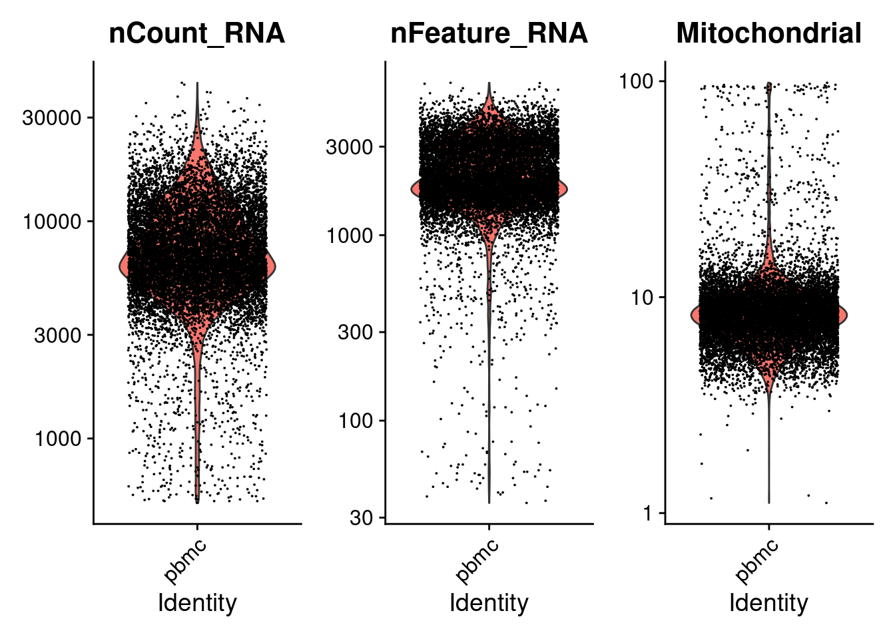
Bioconductor
is.mito <-grepl("^MT-", rowData(sce_data)$Symbol, perl = T) %>% which
sce_data<-scater::addPerCellQC(sce_data,subsets=list("Mitochondrial"=is.mito))
gridExtra::grid.arrange(
plotColData(sce_data, y="sum",) +
scale_y_log10() + ggtitle("Total count"),
plotColData(sce_data, y="detected") +
scale_y_log10() + ggtitle("Detected features"),
plotColData(sce_data, y="subsets_Mitochondrial_percent") + ggtitle("Mito percent")+scale_y_log10(),
ncol=3
)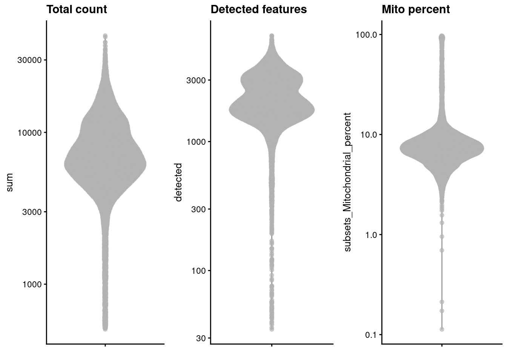
Identify thresholds
qc.lib2 <- scater::isOutlier(seurat_data$nCount_RNA, log=TRUE, type="lower",nmads=3) #sce_data$sum
qc.nexprs2 <- isOutlier(seurat_data$nFeature_RNA, log=TRUE,nmads=3, type="lower") #sce_data$detected
qc.mito2 <- isOutlier(seurat_data$Mitochondrial ,nmads=3,type="higher") #sce_data$subsets_Mitochondrial_percent
discard2 <- qc.lib2 | qc.nexprs2 | qc.mito2data.frame("Total count"=attr(qc.lib2, "thresholds"),
"Detected features"=attr(qc.nexprs2, "thresholds"),
"Mito percent"=attr(qc.mito2, "thresholds")) Total.count Detected.features Mito.percent
lower 1679.027 591.9659 -Inf
higher Inf Inf 13.47941data.frame("Total count"=sum(qc.lib2), "Detected features"=sum(qc.nexprs2),
"Mito percent"=sum(qc.mito2),"Total"=sum(discard2)) Total.count Detected.features Mito.percent Total
1 307 245 525 571sce_data$discard<-discard2
seurat_data$discard<-discard2
gridExtra::grid.arrange(
plotColData(sce_data, y="sum",colour_by="discard") +
scale_y_log10() + ggtitle("Total count"),
plotColData(sce_data, y="detected",colour_by="discard") +
scale_y_log10() + ggtitle("Detected features"),
plotColData(sce_data, y="subsets_Mitochondrial_percent",colour_by="discard") + ggtitle("Mito percent")+scale_y_log10(),
ncol=3
)
seurat_data<-subset(seurat_data,subset= discard!=TRUE)
sce_data<-sce_data[,!sce_data$discard]Normalization
Seurat
seurat_data <- NormalizeData(seurat_data, normalization.method = "LogNormalize", scale.factor = 10000, verbose=F)
seurat_data <- SCTransform(seurat_data, verbose=F) #could regress for multiple factors, including batchAssays(seurat_data)[1] "RNA" "SCT"DefaultAssay(seurat_data)[1] "SCT"colSums(GetAssayData(seurat_data,slot = "counts")[,1:5])AAACCCAAGGCCCAAA-1 AAACCCAAGTAATACG-1 AAACCCAAGTCACACT-1 AAACCCACAAAGCGTG-1
8022 7459 7798 6492
AAACCCACAATCGAAA-1
7242 colSums(GetAssayData(seurat_data,slot = "data")[,1:5])AAACCCAAGGCCCAAA-1 AAACCCAAGTAATACG-1 AAACCCAAGTCACACT-1 AAACCCACAAAGCGTG-1
2726.429 2719.696 2846.029 1609.266
AAACCCACAATCGAAA-1
2070.074 colSums(GetAssayData(seurat_data,assay = "RNA",slot = "counts")[,1:5])AAACCCAAGGCCCAAA-1 AAACCCAAGTAATACG-1 AAACCCAAGTCACACT-1 AAACCCACAAAGCGTG-1
12143 7811 9741 5561
AAACCCACAATCGAAA-1
7399 colSums(GetAssayData(seurat_data,assay = "RNA",slot = "data")[,1:5])AAACCCAAGGCCCAAA-1 AAACCCAAGTAATACG-1 AAACCCAAGTCACACT-1 AAACCCACAAAGCGTG-1
3026.689 3154.815 3159.359 2112.424
AAACCCACAATCGAAA-1
2459.633 Bioconductor
Warning:
Might take a little bit!
set.seed(1000)
clusters <- scran::quickCluster(sce_data)
sce_data <- scran::computeSumFactors(sce_data, cluster=clusters)
sce_data <- scater::logNormCounts(sce_data)assayNames(sce_data)[1] "counts" "logcounts"colSums(logcounts(sce_data)[,1:5])[1] 3961.312 3783.641 3897.069 3186.119 3533.383Feature Selection
Seurat
DefaultAssay(seurat_data)<-"RNA"
seurat_data <- FindVariableFeatures(seurat_data, assay="RNA",selection.method = "vst", nfeatures = 2000, verbose=F)
top10 <- head(VariableFeatures(seurat_data), 10)
plot1 <- VariableFeaturePlot(seurat_data)
LabelPoints(plot = plot1, points = top10, repel = TRUE)+theme(legend.position = "none")When using repel, set xnudge and ynudge to 0 for optimal resultsWarning: Transformation introduced infinite values in continuous x-axisWarning: Removed 11053 rows containing missing values (geom_point).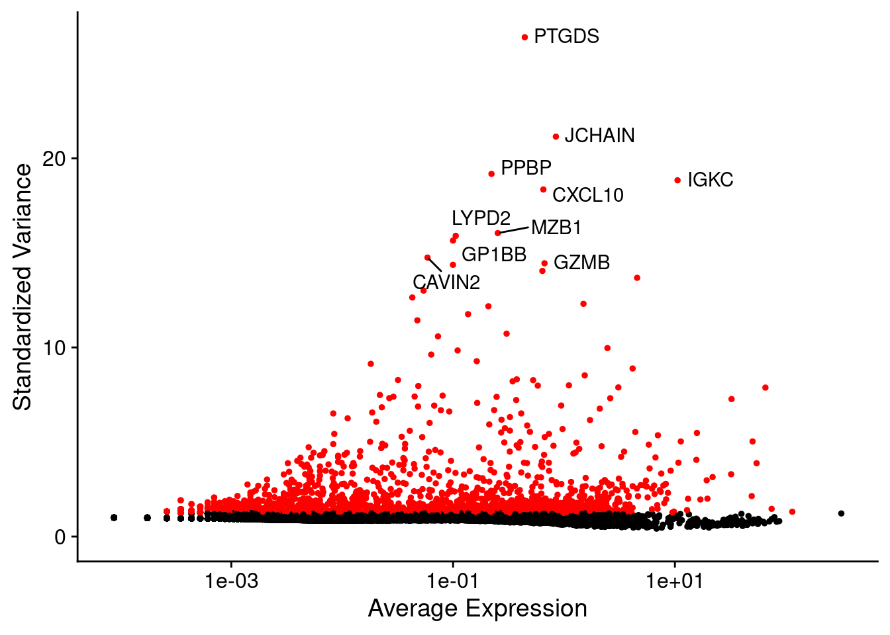
Bioconductor
dec.pbmc <- modelGeneVar(sce_data)
chosen <- getTopHVGs(dec.pbmc, n=2000)
rowSubset(sce_data) <- chosen
fit.pbmc <- metadata(dec.pbmc)
plot2<-data.frame(mean=fit.pbmc$mean,var=fit.pbmc$var, color=rownames(sce_data)%in% chosen)%>%
ggplot(aes(x=mean,y=var))+geom_point(aes(color=color))+scale_color_manual(values = c("black","red"))+geom_function(color="dodgerblue",fun =fit.pbmc$trend ,size=1.5)+theme(legend.position = "none")#+scale_x_continuous(trans='log2')+scale_y_continuous(trans='log2')
t<-which(rownames(sce_data)%in% chosen[1:10])
td<-data.frame(mean=fit.pbmc$mean[t],var=fit.pbmc$var[t],symbol=rowData(sce_data)$Symbol[t])
plot2+ggrepel::geom_text_repel(data=td,aes(label=symbol))+ylab("Variance of log-expression")+xlab("Mean of log-expression")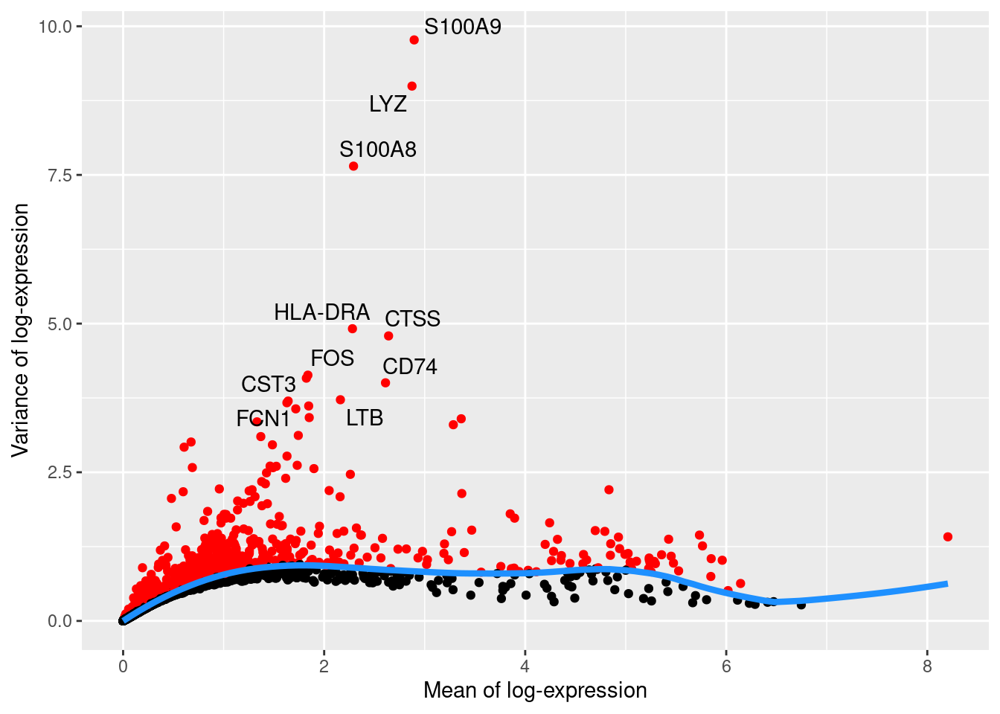
Dimension Reduction
PCA
Seurat
all.genes <- rownames(seurat_data)
seurat_data <- ScaleData(seurat_data, features = all.genes)Centering and scaling data matrixseurat_data <- RunPCA(seurat_data,
features = VariableFeatures(object = seurat_data),
verbose = F,npcs = 50)
DimPlot(seurat_data,reduction = "pca",)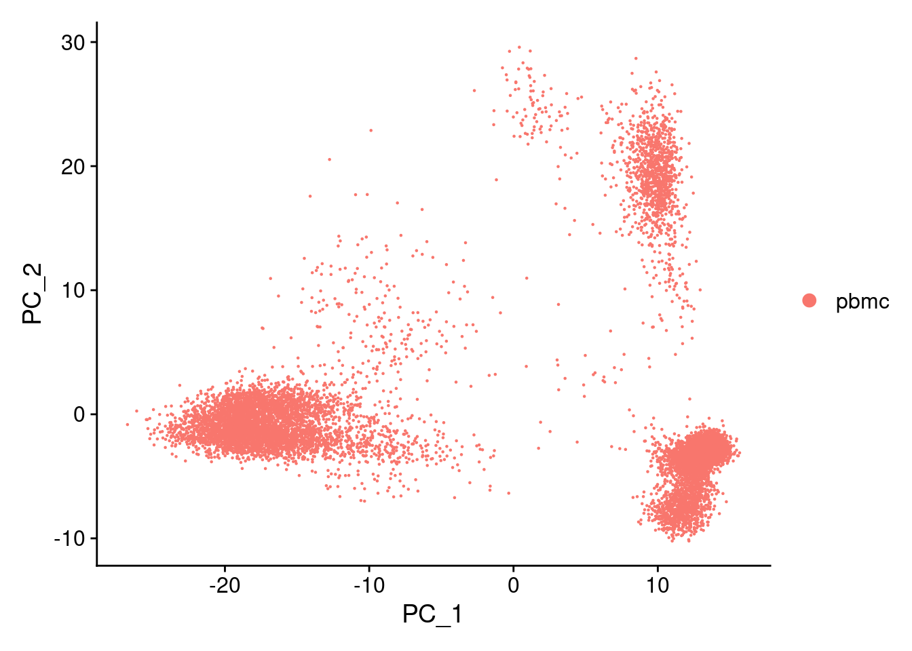
ElbowPlot(seurat_data)
stdev_pca_seurat<-seurat_data@reductions$pca@stdev
findPC(sdev = stdev_pca_seurat,number = c(30,40,50),method = 'all',figure = T)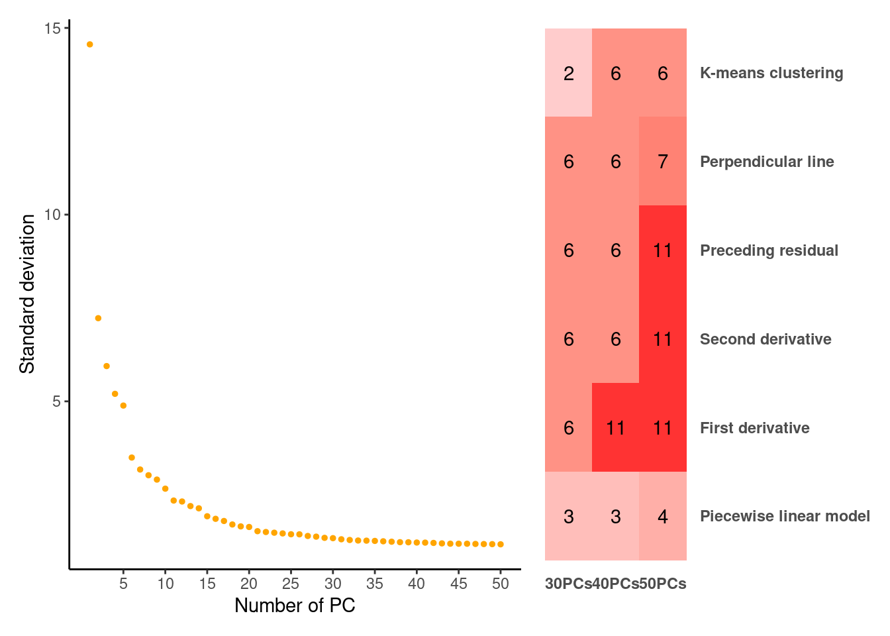
Piecewise linear model First derivative Second derivative
30PCs 3 6 6
40PCs 3 11 6
50PCs 4 11 11
Preceding residual Perpendicular line K-means clustering
30PCs 6 6 2
40PCs 6 6 6
50PCs 11 7 6Bioconductor
sce_data <- runPCA(sce_data,ncomponents = 50)
plotPCA(sce_data)
stdev_pca_sce <- attr(reducedDim(sce_data, "PCA"),
"varExplained") %>% sqrt()
plot(stdev_pca_sce)
findPC(sdev = stdev_pca_sce,number = c(30,40,50),method = 'all',figure = T)
Piecewise linear model First derivative Second derivative
30PCs 3 6 4
40PCs 3 9 4
50PCs 4 11 9
Preceding residual Perpendicular line K-means clustering
30PCs 6 6 2
40PCs 7 6 2
50PCs 11 7 2I choose 11 PC.
TSNE
Seurat
seurat_data <- RunTSNE(seurat_data, dims = 1:11,reduction = "pca")
DimPlot(seurat_data, reduction = "tsne")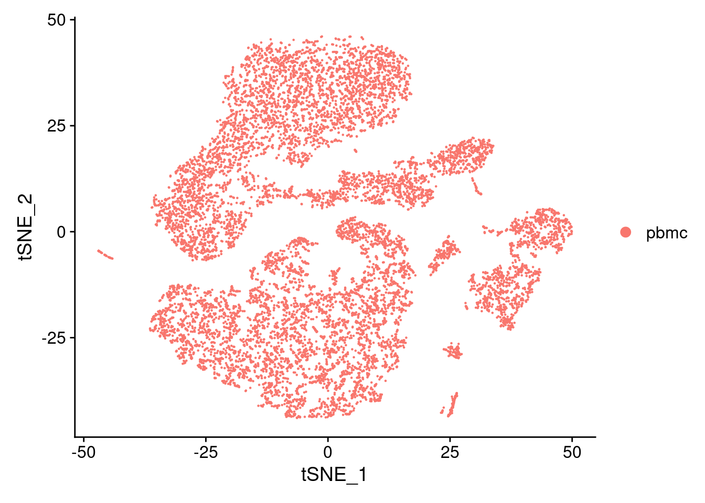
sce_data <- runTSNE(sce_data, dimred="PCA",n_dimred=11)
plotReducedDim(sce_data, dimred="TSNE")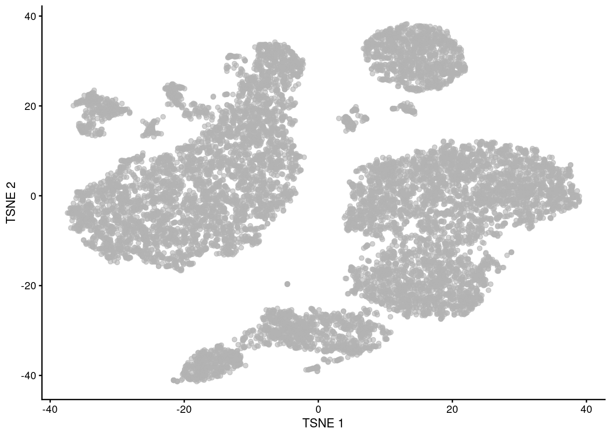
sce_data <- runTSNE(sce_data, dimred="PCA",n_dimred=11,perplexity=5)
plotReducedDim(sce_data, dimred="TSNE")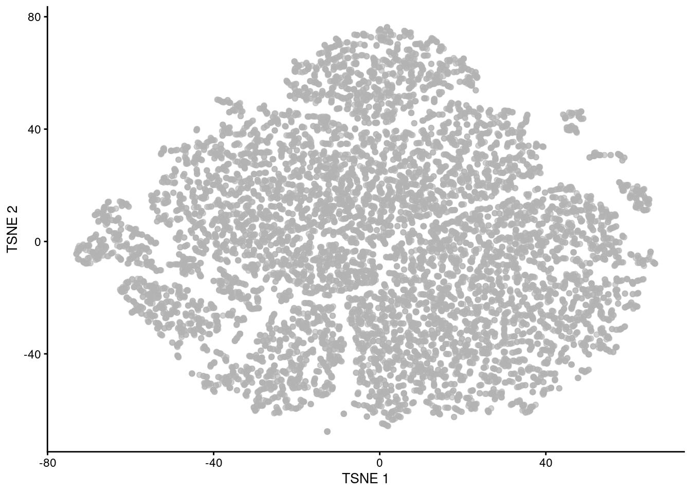
sce_data <- runTSNE(sce_data, dimred="PCA",n_dimred=11,perplexity=20)
plotReducedDim(sce_data, dimred="TSNE")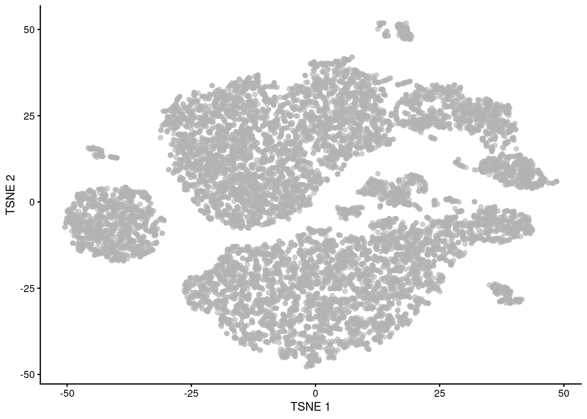
sce_data <- runTSNE(sce_data, dimred="PCA",n_dimred=11,perplexity=80)
plotReducedDim(sce_data, dimred="TSNE")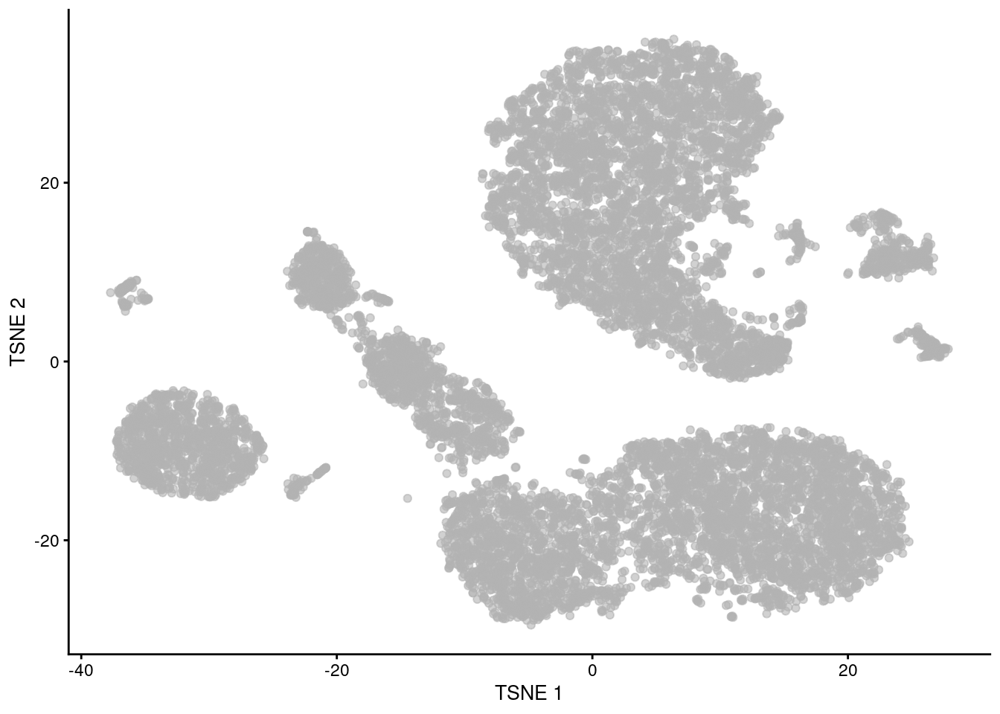
UMAP
Seurat
seurat_data <- RunUMAP(seurat_data, dims = 1:11,reduction = "pca",verbose = F)Warning: The default method for RunUMAP has changed from calling Python UMAP via reticulate to the R-native UWOT using the cosine metric
To use Python UMAP via reticulate, set umap.method to 'umap-learn' and metric to 'correlation'
This message will be shown once per sessionDimPlot(seurat_data, reduction = "umap")
seurat_data <- RunUMAP(seurat_data, dims = 1:11,reduction = "pca",verbose = F,n.neighbors = 5)
DimPlot(seurat_data, reduction = "umap")
seurat_data <- RunUMAP(seurat_data, dims = 1:11,reduction = "pca",verbose = F,n.neighbors = 50)
DimPlot(seurat_data, reduction = "umap")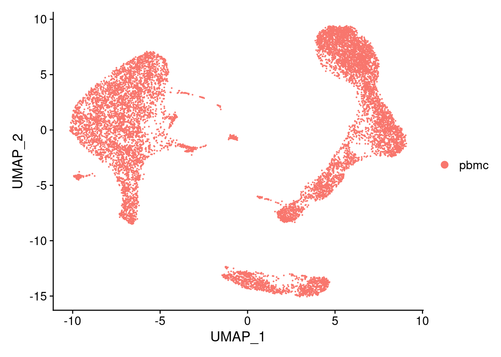
seurat_data <- RunUMAP(seurat_data, dims = 1:11,reduction = "pca",verbose = F,n.neighbors = 100)
DimPlot(seurat_data, reduction = "umap")
set.seed(05122022)
sce_data <- runUMAP(sce_data, dimred="PCA",n_dimred=11)
plotReducedDim(sce_data, dimred="UMAP")
Clustering
Seurat
seurat_data <- FindNeighbors(seurat_data, dims = 1:11)Computing nearest neighbor graphComputing SNNseurat_data <- FindClusters(seurat_data, resolution = 0.5)Modularity Optimizer version 1.3.0 by Ludo Waltman and Nees Jan van Eck
Number of nodes: 11425
Number of edges: 385473
Running Louvain algorithm...
Maximum modularity in 10 random starts: 0.9107
Number of communities: 15
Elapsed time: 1 secondsDimPlot(seurat_data, reduction = "umap")seurat_data <- FindClusters(seurat_data, resolution = 1.5)Modularity Optimizer version 1.3.0 by Ludo Waltman and Nees Jan van Eck
Number of nodes: 11425
Number of edges: 385473
Running Louvain algorithm...
Maximum modularity in 10 random starts: 0.8360
Number of communities: 22
Elapsed time: 1 secondsDimPlot(seurat_data, reduction = "umap")seurat_data <- FindClusters(seurat_data, resolution = 0.1)Modularity Optimizer version 1.3.0 by Ludo Waltman and Nees Jan van Eck
Number of nodes: 11425
Number of edges: 385473
Running Louvain algorithm...
Maximum modularity in 10 random starts: 0.9677
Number of communities: 9
Elapsed time: 1 secondsDimPlot(seurat_data, reduction = "umap")Bioconductor
g <- buildSNNGraph(sce_data, k=11, use.dimred = "PCA")
clust <- igraph::cluster_walktrap(g)$membership
sce_data$cluster_rank_walktrap <- factor(clust)
plotReducedDim(sce_data, "UMAP", colour_by="cluster_rank_walktrap")reducedDim(sce_data,"UMAP") %>% cbind(colData(sce_data)) %>%
as_tibble %>%
ggplot(aes(x=V1,y=V2))+
geom_point(aes(color=cluster_rank_walktrap), size=0.2)+
cowplot::theme_cowplot(12)+
guides(color = guide_legend(override.aes = list(size=2)))+
ylab("UMAP_2")+xlab("UMAP_1")Clustering like Seurat and playing with resolution
g <- buildSNNGraph(sce_data, k=11, use.dimred = "PCA",type = "jaccard")
clust2 <- igraph::cluster_louvain(g, resolution = 0.5)$membership
sce_data$cluster_0.5 <- factor(clust2)
plotReducedDim(sce_data, "UMAP", colour_by="cluster_0.5")clust2 <- igraph::cluster_louvain(g, resolution = 0.1)$membership
sce_data$cluster_0.1 <- factor(clust2)
plotReducedDim(sce_data, "UMAP", colour_by="cluster_0.1")clust2 <- igraph::cluster_louvain(g, resolution = 1.5)$membership
sce_data$cluster_1.5 <- factor(clust2)
plotReducedDim(sce_data, "UMAP", colour_by="cluster_1.5")Cluster Behavior
colors<-scater:::.get_palette("tableau10medium")Silhouette width
sil.approx <- bluster::approxSilhouette(reducedDim(sce_data, "PCA"), clusters=sce_data$cluster_0.5)
sil.data <- as.data.frame(sil.approx)
sil.data$closest <- factor(ifelse(sil.data$width > 0, sce_data$cluster_0.5, sil.data$other))
sil.data$cluster <- sce_data$cluster_0.5
ggplot(sil.data, aes(x=cluster, y=width, colour=closest)) +
ggbeeswarm::geom_quasirandom(method="smiley")+
scale_color_manual(values = colors)Cluster purity
pure.pbmc <- bluster::neighborPurity(reducedDim(sce_data, "PCA"), sce_data$cluster_0.5)
pure.data <- as.data.frame(pure.pbmc)
pure.data$maximum <- factor(pure.data$maximum)
pure.data$cluster <- sce_data$cluster_0.5
ggplot(pure.data, aes(x=cluster, y=purity, colour=maximum)) +
ggbeeswarm::geom_quasirandom(method="smiley")+
scale_color_manual(values = colors)Comparing Clusters
tab <- table("Walktrap"=sce_data$cluster_rank_walktrap, "Louvain"=sce_data$cluster_0.5)
rownames(tab) <- paste("Walktrap", rownames(tab))
colnames(tab) <- paste("Louvain", colnames(tab))
pheatmap::pheatmap(log10(tab+10), color=viridis::viridis(100), cluster_cols=FALSE, cluster_rows=FALSE)jacc.mat <- bluster::linkClustersMatrix(sce_data$cluster_rank_walktrap, sce_data$cluster_0.5)
rownames(jacc.mat) <- paste("Walktrap", rownames(jacc.mat))
colnames(jacc.mat) <- paste("Louvain", colnames(jacc.mat))
pheatmap::pheatmap(jacc.mat, color=viridis::viridis(100), cluster_cols=FALSE, cluster_rows=FALSE)mat_clust<-data.frame("res_0.1"=sce_data$cluster_0.1, "res_0.5"=sce_data$cluster_0.5,"res_1.5"=sce_data$cluster_1.5)
set.seed(1111)
clustree(mat_clust, prefix="res_")Markers (Seurat Object)
Cluster 1 vs Cluster 2
Idents(seurat_data)<-seurat_data$RNA_snn_res.0.5
seurat_data_filt<-seurat_data[rowSums(seurat_data@assays$RNA@counts >0 ) > 50,]
de_1_2<-FindMarkers(seurat_data_filt, ident.1 =1,ident.2=2,min.pct = 0.25, logfc.threshold = 0.25)
ggplot(de_1_2,aes(x=avg_log2FC, y=-log10(p_val_adj)))+geom_point(aes(color=pct.1))+
scale_color_gradient(low="black",high = "magenta")Find All Markers one vs the rest
seurat.markers <- FindAllMarkers(seurat_data_filt, only.pos = TRUE,
min.pct = 0.50, logfc.threshold = 0.5)Calculating cluster 0Calculating cluster 1Calculating cluster 2Calculating cluster 3Calculating cluster 4Calculating cluster 5Calculating cluster 6Calculating cluster 7Calculating cluster 8Calculating cluster 9Calculating cluster 10Calculating cluster 11Calculating cluster 12Calculating cluster 13Calculating cluster 14head(seurat.markers) p_val avg_log2FC pct.1 pct.2 p_val_adj cluster gene
CCR7 0 1.746634 0.823 0.156 0 0 CCR7
BCL11B 0 1.620198 0.926 0.292 0 0 BCL11B
TCF7 0 1.590896 0.869 0.230 0 0 TCF7
LEF1 0 1.549810 0.762 0.124 0 0 LEF1
PIK3IP1 0 1.479750 0.817 0.252 0 0 PIK3IP1
LDHB 0 1.474059 0.975 0.619 0 0 LDHBComparing clusters by pairs
marker.info <- scoreMarkers(seurat_data_filt@assays$RNA@data, seurat_data_filt$RNA_snn_res.0.5)length(marker.info)[1] 15sapply(marker.info, dim) 0 1 2 3 4 5 6 7 8 9 10 11
[1,] 14485 14485 14485 14485 14485 14485 14485 14485 14485 14485 14485 14485
[2,] 19 19 19 19 19 19 19 19 19 19 19 19
12 13 14
[1,] 14485 14485 14485
[2,] 19 19 19head(marker.info$'0')DataFrame with 6 rows and 19 columns
self.average other.average self.detected other.detected
<numeric> <numeric> <numeric> <numeric>
AL627309.5 0.00996103 0.03546981 0.01088534 0.0539750
LINC01409 0.05994775 0.06675977 0.06277213 0.0960046
LINC01128 0.07511543 0.04580293 0.07656023 0.0671701
LINC00115 0.00826562 0.00918127 0.00798258 0.0136998
FAM41C 0.00990948 0.01287641 0.01052250 0.0197699
NOC2L 0.19921853 0.20061216 0.19375907 0.2662586
mean.logFC.cohen min.logFC.cohen median.logFC.cohen max.logFC.cohen
<numeric> <numeric> <numeric> <numeric>
AL627309.5 -0.150527969 -0.4867261 -0.14753206 0.101746
LINC01409 -0.023213597 -0.2064664 0.00948573 0.100287
LINC01128 0.135353397 -0.0608045 0.12135853 0.336278
LINC00115 -0.005953826 -0.0609704 -0.01779990 0.122247
FAM41C -0.012910709 -0.3126970 -0.00374303 0.141978
NOC2L 0.000613232 -0.2793831 0.01173464 0.161922
rank.logFC.cohen mean.AUC min.AUC median.AUC max.AUC rank.AUC
<integer> <numeric> <numeric> <numeric> <numeric> <integer>
AL627309.5 1247 0.478639 0.433328 0.479584 0.504305 2225
LINC01409 3024 0.485058 0.440184 0.488638 0.503426 2153
LINC01128 596 0.506330 0.464176 0.512293 0.529046 766
LINC00115 2428 0.497177 0.490019 0.496989 0.503991 2242
FAM41C 1631 0.495443 0.455740 0.498022 0.505261 1354
NOC2L 1455 0.477961 0.380197 0.494532 0.510510 2231
mean.logFC.detected min.logFC.detected median.logFC.detected
<numeric> <numeric> <numeric>
AL627309.5 -1.299155 -3.627340 -1.608572
LINC01409 -0.476843 -1.551686 -0.444566
LINC01128 0.379332 -0.973758 0.463179
LINC00115 -0.500435 -1.130641 -0.655775
FAM41C -0.352989 -2.422225 -0.381313
NOC2L -0.372021 -1.387882 -0.182204
max.logFC.detected rank.logFC.detected
<numeric> <integer>
AL627309.5 1.818183 342
LINC01409 0.141970 3057
LINC01128 1.375129 284
LINC00115 0.528197 1213
FAM41C 1.614667 447
NOC2L 0.156357 3455colnames(marker.info$'0') [1] "self.average" "other.average" "self.detected"
[4] "other.detected" "mean.logFC.cohen" "min.logFC.cohen"
[7] "median.logFC.cohen" "max.logFC.cohen" "rank.logFC.cohen"
[10] "mean.AUC" "min.AUC" "median.AUC"
[13] "max.AUC" "rank.AUC" "mean.logFC.detected"
[16] "min.logFC.detected" "median.logFC.detected" "max.logFC.detected"
[19] "rank.logFC.detected" marker.info$'3' %>% as_tibble(rownames = "Gene") %>%arrange(rank.AUC) %>% filter(rank.AUC==1) %>% as.data.frame() Gene self.average other.average self.detected other.detected
1 CTSS 3.801811 2.080293 1 0.8156463
2 S100A9 5.753271 2.011809 1 0.6386556
3 S100A8 5.107025 1.521323 1 0.5392722
4 S100A6 3.719960 2.502475 1 0.9260105
5 MNDA 3.301313 1.206530 1 0.5152278
6 LYZ 5.058072 2.141061 1 0.6497189
mean.logFC.cohen min.logFC.cohen median.logFC.cohen max.logFC.cohen
1 3.313892 -0.5512238 3.708353 7.052284
2 6.274254 1.3917778 5.539206 11.819090
3 6.276313 1.4020899 6.298098 11.098143
4 2.271957 0.5630242 2.176300 5.077679
5 5.581362 0.4718434 4.615489 11.213083
6 6.161543 0.5095405 5.733042 12.017791
rank.logFC.cohen mean.AUC min.AUC median.AUC max.AUC rank.AUC
1 2 0.8566416 0.3484391 0.9856361 1 1
2 1 0.9693524 0.8408574 0.9987807 1 1
3 1 0.9662876 0.8410464 0.9985267 1 1
4 1 0.8879765 0.6536828 0.9401544 1 1
5 1 0.9377599 0.6316344 0.9969582 1 1
6 1 0.9356778 0.6371454 0.9997167 1 1
mean.logFC.detected min.logFC.detected median.logFC.detected
1 0.3635300 -3.203427e-16 0.06061152
2 0.8283111 0.000000e+00 0.78329730
3 1.2528259 0.000000e+00 1.13805007
4 0.1295625 -3.203427e-16 0.01560176
5 1.8888663 0.000000e+00 1.28525938
6 0.8324444 -3.203427e-16 0.69699944
max.logFC.detected rank.logFC.detected
1 1.3010340 1755
2 1.6769228 1253
3 2.5162117 814
4 0.9828589 1755
5 4.6288414 322
6 1.8354873 1326g<-"MNDA"
seurat_data_filt@assays$RNA@data[g,] %>% as_tibble(rownames = "Cell") %>% left_join(as_tibble(seurat_data_filt[[]], rownames="Cell"), by=c("Cell")) %>%
ggplot(aes(x=RNA_snn_res.0.5, y=value))+geom_violin(scale = "width", adjust=1)+
ggbeeswarm::geom_quasirandom(size=0.1, aes(color=RNA_snn_res.0.5))+
theme(legend.position = "none")Rank means: is the smallest rank of each gene across all pairwise comparisons;If a gene has a small min-rank, we can conclude that it is one of the top upregulated genes in at least one comparison of cluster of interest to another cluster
On some occasions, ranking by the minimum can be highly effective as it yields a concise set of highly cluster-specific markers.
genes_c7<-marker.info$'7' %>% as_tibble(rownames = "Gene") %>% filter(rank.logFC.cohen<=5) %>% .$Gene
plotGroupedHeatmap(Seurat::as.SingleCellExperiment(seurat_data), features=genes_c7, group="RNA_snn_res.0.5",
center=TRUE, zlim=c(-3, 3))plotDots(Seurat::as.SingleCellExperiment(seurat_data), genes_c7, group="RNA_snn_res.0.5")+scale_color_gradient(low = "white", high = "orange") Scale for 'colour' is already present. Adding another scale for 'colour',
which will replace the existing scale.Visualizations
markers.to.plot <- seurat.markers %>% group_by(cluster) %>% slice_head(n=2) %>% .$gene %>% unique
DotPlot(seurat_data, features = markers.to.plot, cols=c("white","orange")) +
RotatedAxis()markers.to.plot <- seurat.markers %>% group_by(cluster) %>% slice_head(n=5) %>% .$gene %>% unique
DoHeatmap(subset(seurat_data, downsample = 100), features = markers.to.plot, size = 3)table(seurat.markers$cluster)
0 1 2 3 4 5 6 7 8 9 10 11 12 13 14
162 521 92 429 418 122 128 132 305 384 45 193 511 88 245 list_genes<-seurat.markers %>% group_by(cluster) %>% summarise(genes=list(gene)) %>% .$genes
names(list_genes)<-paste0("Cluster_", unique(seurat.markers$cluster))
upset(fromList(list_genes),nsets = length(names(list_genes)),order.by = "freq")genes2plot<-seurat.markers %>% as_tibble() %>% group_by(cluster) %>% arrange(desc(avg_log2FC)) %>% slice_head(n=1) %>% .$gene %>% unique()
VlnPlot(seurat_data, features = genes2plot, pt.size = 0)RidgePlot(seurat_data,features = "LYZ")Picking joint bandwidth of 0.18FeaturePlot(seurat_data,features = c("CD4", "CCR7")) FeaturePlot(seurat_data, features = c("CD4", "CCR7"), blend = TRUE)Nebulosa::plot_density(seurat_data, c("CD4", "CCR7"))Nebulosa::plot_density(seurat_data, c("CD4", "CCR7"), joint = T)Magic
IMPORTANT WARNING
This might take a lot of memory
# seurat_data_filt <- magic(seurat_data_filt)
# seurat_data_filt <- SeuratWrappers::RunALRA(seurat_data_filt)
# saveRDS(seurat_data_filt,"seurat_withMagic_ALRA.RDS")
seurat_data_filt<-readRDS("seurat_withMagic_ALRA.RDS")
(VlnPlot(seurat_data_filt, features=c("CD4"),assay="RNA")+ theme(legend.position = "none")+ggtitle("LogNormalize"))+
(VlnPlot(seurat_data_filt, features=c("CD4"), assay="MAGIC_RNA")+theme(legend.position = "none")+ggtitle("MAGIC"))+
(VlnPlot(seurat_data_filt, features=c("CD4"), assay="alra")+theme(legend.position = "none")+ggtitle("ALRA"))
seurat_data_filt@active.assay <- 'MAGIC_RNA'
a<-FeaturePlot(seurat_data_filt, features = c("CD4"))+ scale_color_viridis_c(option = "C")Scale for 'colour' is already present. Adding another scale for 'colour',
which will replace the existing scale.b<-FeaturePlot(seurat_data_filt, features = c("CCR7"))+ scale_color_viridis_c(option = "C")Scale for 'colour' is already present. Adding another scale for 'colour',
which will replace the existing scale.seurat_data_filt@active.assay <- 'alra'
a1<-FeaturePlot(seurat_data_filt, features = c("CD4"))+ scale_color_viridis_c(option = "C")Scale for 'colour' is already present. Adding another scale for 'colour',
which will replace the existing scale.b1<-FeaturePlot(seurat_data_filt, features = c("CCR7"))+ scale_color_viridis_c(option = "C")Scale for 'colour' is already present. Adding another scale for 'colour',
which will replace the existing scale.seurat_data_filt@active.assay <- 'RNA'
a2<-FeaturePlot(seurat_data_filt, features = c("CD4"))+ scale_color_viridis_c(option = "C")Scale for 'colour' is already present. Adding another scale for 'colour',
which will replace the existing scale.b2<-FeaturePlot(seurat_data_filt, features = c("CCR7"))+ scale_color_viridis_c(option = "C")Scale for 'colour' is already present. Adding another scale for 'colour',
which will replace the existing scale.cowplot::plot_grid(a2,b2,a,b,a1,b1,ncol=2)Cluster Annotation
SingleR
ref <- celldex::BlueprintEncodeData()snapshotDate(): 2022-04-26see ?celldex and browseVignettes('celldex') for documentationloading from cachesee ?celldex and browseVignettes('celldex') for documentationloading from cacherownames(sce_data)<-rowData(sce_data)$Symbol
pred <- SingleR::SingleR(test=sce_data, ref=ref, labels=ref$label.main)
plotScoreHeatmap(pred)tab <- table(Assigned=pred$pruned.labels, Cluster=sce_data$cluster_0.5)
pheatmap::pheatmap(log2(tab+1), color=colorRampPalette(c("white", "blue"))(101))pred2 <- SingleR(test=sce_data, ref=ref, labels=ref$label.fine)
tab <- table(Assigned=pred2$pruned.labels, Cluster=sce_data$cluster_0.5)
pheatmap::pheatmap(log2(tab+1), color=colorRampPalette(c("white", "blue"))(101))CelliD
seurat_data_filt <-CelliD::RunMCA(seurat_data_filt)Computing Fuzzy Matrix5.885 sec elapsedComputing SVD203.832 sec elapsedComputing Coordinates13.332 sec elapsedpanglao <- readr::read_tsv("https://panglaodb.se/markers/PanglaoDB_markers_27_Mar_2020.tsv.gz")Rows: 8286 Columns: 14 Column specification
Delimiter: "\t"
chr (8): species, official gene symbol, cell type, nicknames, product descri...
dbl (6): ubiquitousness index, canonical marker, sensitivity_human, sensitiv...
Use `spec()` to retrieve the full column specification for this data.
Specify the column types or set `show_col_types = FALSE` to quiet this message.panglao_IS <- panglao %>% filter(organ == "Immune system") %>%
filter(grepl("Hs",species)) %>%
group_by(`cell type`) %>%
summarise(geneset = list(`official gene symbol`))
panglao_IS <- setNames(panglao_IS$geneset, panglao_IS$`cell type`)
lapply(panglao_IS[1:5],head)$`B cells`
[1] "CD2" "CD5" "MS4A1" "CR2" "CD22" "FCER2"
$`B cells memory`
[1] "CD38" "CD80" "CD84" "CD86" "NT5E" "PAX5"
$`B cells naive`
[1] "CD19" "CD2" "CD72" "IL2RA" "MME" "ABCB4"
$Basophils
[1] "CD69" "IL3RA" "CCR3" "ENPP3" "FCER1A" "TLR4"
$`Dendritic cells`
[1] "IL6" "CD86" "CD83" "CD1A" "CR2" "TLR9"HGT_gs <- RunCellHGT(seurat_data_filt, pathways = panglao_IS, dims = 1:50, n.features = 200)
calculating distanceranking genes22 pathways kept for hypergeometric test out of 25, 3 filtered as less than 10 features was present in the data
calculating features overlapperforming hypergeometric testdim(HGT_gs)[1] 22 11425HGT_gs[1:5,1:5]5 x 5 sparse Matrix of class "dgCMatrix"
AAACCCAAGGCCCAAA-1 AAACCCAAGTAATACG-1 AAACCCAAGTCACACT-1
B cells . . .
B cells memory . . .
B cells naive . . .
Basophils 0.0687406 1.179326 .
Dendritic cells 0.8641467 2.590818 2.289788
AAACCCACAAAGCGTG-1 AAACCCACAATCGAAA-1
B cells . 24.843038
B cells memory . 30.488829
B cells naive . 20.201899
Basophils . .
Dendritic cells . 2.732697This is a matrix of benjamini hochberg adjusted pvalue pvalue or a sparse matrix of (-log10) benjamini hochberg adjusted pvalue
# For each cell, assess the signature with the lowest corrected p-value (max -log10 corrected p-value)
gs_prediction <- rownames(HGT_gs)[apply(HGT_gs, 2, which.max)]
head(gs_prediction)[1] "Macrophages" "Monocytes" "Dendritic cells" "T memory cells"
[5] "B cells memory" "B cells naive" # For each cell, evaluate if the lowest p-value is significant
gs_prediction_signif <- ifelse(apply(HGT_gs, 2, max)>2, yes = gs_prediction, "unassigned") #pvalue<0.01
# Save cell type predictions as metadata within the Seurat object
seurat_data_filt$CellID_prediction <- gs_prediction_signifDimPlot(seurat_data_filt,reduction = "umap",group.by = "RNA_snn_res.0.5")DimPlot(seurat_data_filt,reduction = "umap",group.by = "CellID_prediction" )tab <- table(Assigned=seurat_data_filt$CellID_prediction, Cluster=seurat_data_filt$RNA_snn_res.0.5)
tab %>% as.data.frame() %>% ggplot(aes(x=Cluster, y=Freq))+ geom_bar(position = "fill", aes(fill=Assigned), stat="identity")+scale_fill_manual(values=unname(pals::alphabet2(22)))
iSEE
rownames(sce_data)<-rowData(sce_data)$ID
iSEE(sce_data)